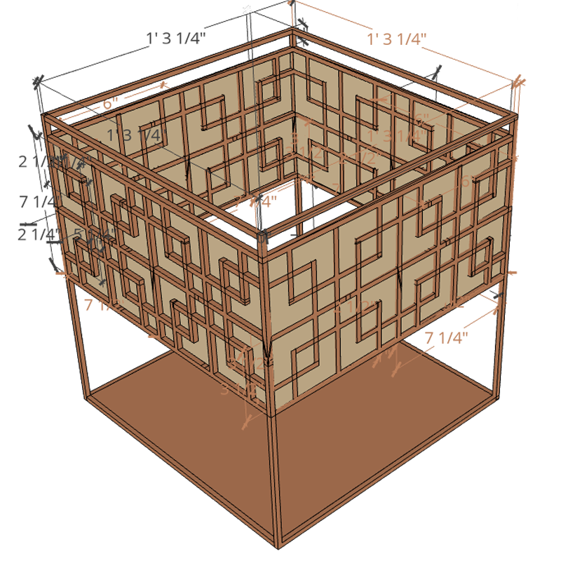

This project was for my college 3-D art and design class that I took spring of 2021. For this project, I used wood, woodworking tools such as a saw and hot glue, the blueprint software Sketchup, and feedback from my classmates and professor over Zoom.
My objective was that I needed to build a wooden sculpture for an art class project that I was in. However it needed to be slightly abstract and I could only use specifically sized wood dowels.
The first part of this project was brainstorming. I looked up a lot of different woodworking art styles online and came across Japanese kumiko and shoji which was something that really sparked my interest and made me want to create a design that was inspired by those styles.
Next was designing and coming up with a blueprint. At this point I had already had an idea of what I wanted it to look like in my head, I just needed to know the exact dimensions to cut the wood to. So, I ended up using the free web based blueprint software called SketchUp, which was very helpful since it was geared towards architecture and woodworking.

Since I had my blueprint and the inspiration research for my project all done, all I had to do was build it. I was able to saw small and large pieces of the wood dowels using my miniature hand saw, and I used wood glue to glue the pieces together.
The final outcome was a 15”x15” cube inspired by both kumiko art and Japanese shoji lanterns.
After handing it in to my professor and presenting it to the class, I received feedback on my work and how I could improve and progress further with art and woodwork.
While I was working on this project, I learned a lot about Japanese culture and woodworking. I ended up taking great interest in learning about Japanese kumiko wood techniques and the culture behind it. After I finished my art piece, I thought of some ways I could do it differently next time. First I would use a different type of glue, possibly wood glue and clamps instead of hot glue which ended up being too thick and looking messy. I would also make my project smaller and into a working LED lamp which I think would look very cool.